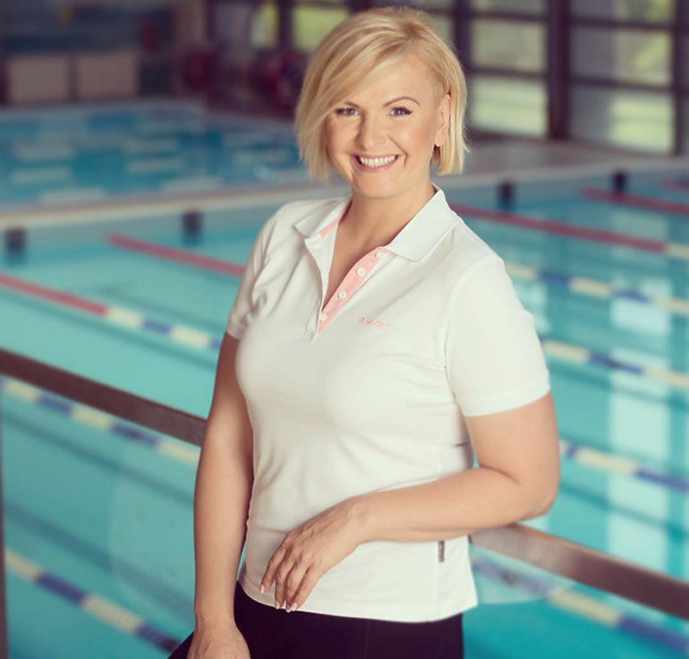
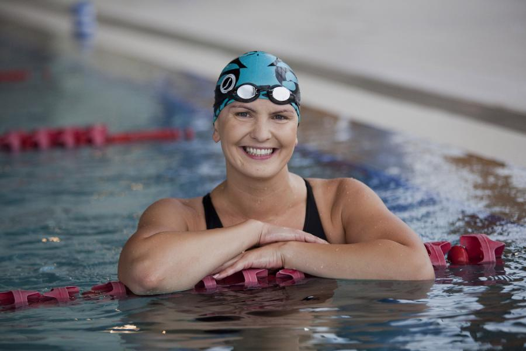

Otylia Jędrzejczak - nasza mistrzyni olimpijska
09.01.2020 | 13:23:47 | Grzegorz Majdan
Otylia Jędrzejczak (ur. 13 grudnia 1983 w Rudzie Śląskiej) – polska pływaczka specjalizująca się w stylu motylkowym i dowolnym, mistrzyni olimpijska, dwukrotna mistrzyni świata, pięciokrotna mistrzyni Europy na długim basenie, trzykrotna rekordzistka świata, trzykrotnie wybierana najlepszym sportowcem Polski.
W 2005 magazyn „Swimming World” ogłosił ją najlepszą pływaczką w Europie.
W 2019 roku została wprowadzona do International Swimming Hall of Fame.
Kariera sportowa
Karierę pływacką zaczynała, trenując w Pałacu Młodzieży w Katowicach.
W lipcu 2000, mając niespełna 17 lat została mistrzynią Europy w konkurencji 200 m stylem motylkowym, uzyskawszy czas 2:08,63. Zdobyła także srebrny medal na 100 m stylem motylkowym. Trzy miesiące później podczas igrzysk olimpijskich w Sydney w półfinale 200 m stylem motylkowym ustanowiła nowy rekord Europy (2:07,81) W finale tej konkurencji była piąta z czasem 2:08,48. Na dystansie 100 m stylem motylkowym uzyskała wynik 59,16 s i zajęła dziewiąte miejsce.
4 sierpnia 2002 na mistrzostwach Europy w Berlinie czasem 2:05,78 pobiła rekord świata na 200 m stylem motylkowym.
W 2004 na igrzyskach olimpijskich w Atenach zdobyła złoty medal na dystansie 200 m stylem motylkowym. Wywalczyła także dwa srebrne medale w konkurencjach 100 m stylem motylkowym i 400 m stylem dowolnym. Rok później, podczas mistrzostw świata w Montrealu zwyciężyła na dystansie 200 m stylem motylkowym i czasem 2:05,61 poprawiła własny rekord globu.
25 marca 2006 powróciła do sportu po długiej przerwie, wygrywając w Ostrowcu Świętokrzyskim na 200 m stylem motylkowym w trójmeczu Polska-Czechy-Ukraina z czasem 2:15,73. W grudniu 2006 na mistrzostwach Europy na krótkim basenie (25-metrowym) w Helsinkach, zdobywając złoty medal, ustanowiła na tym dystansie rekord Europy (2:04,94). W grudniu 2007 na mistrzostwach Europy na krótkim basenie w Debreczynie zdobyła złoty medal, ustanawiając rekord świata (2:03,53).
Niepowodzeniem zakończył się jej start w mistrzostwach Europy w Eindhoven. Startując po wcześniejszych kłopotach zdrowotnych, odpadła w półfinałowych wyścigach na 100 i 200 m stylem motylkowym. Podczas igrzysk olimpijskich w Pekinie była czwarta w wyścigu na 200 m stylem motylkowym, dziewiąta na 400 m stylem dowolnym i zajęła 17. miejsce w wyścigu na 100 m stylem motylkowym. Po igrzyskach przez długi czas nie brała udziału w zawodach i zawiesiła karierę. Do pływania powróciła na kolejnych igrzyskach olimpijskich w Londynie. W konkurencji 200 m stylem motylkowym uplasowała się na 16. pozycji i zajęła 25. miejsce na dystansie dwukrotnie krótszym.
5 czerwca 2014 podczas uroczystości rozpoczęcia pływackich mistrzostw Polski w Olsztynie ogłosiła zakończenie sportowej kariery.
Kariera polityczna
W wyborach do Parlamentu Europejskiego w 2014 bezskutecznie ubiegała się o mandat z drugiego miejsca na liście Platformy Obywatelskiej w województwie kujawsko-pomorskim, uzyskując 10 110 głosów. Poza tym, została członkiem honorowego komitetu poparcia Bronisława Komorowskiego przed wyborami prezydenckimi w Polsce w 2015.
Pozostałe przedsięwzięcia
Udziela się charytatywnie. Przekazała swój złoty medal olimpijski na aukcję, za który uzyskała kwotę 257 550 zł, którą przekazaną Klinice Onkologii i Hematologii we Wrocławiu.
Wystąpiła w teledysku do piosenki grupy Varius Manx „Tyle siły mam” (2006).
Była uczestniczką programu rozrywkowego TVN Taniec z Gwiazdami (2009) i jurorką w programie Polsatu Celebrity Splash! (2015).
W 2012 wspólnie z innymi polskimi sportowcami zagrała w spocie reklamowym u boku Usaina Bolta.
Życie prywatne
Jest związana z Pawłem Przybyłą, nauczycielem wychowania fizycznego i byłym zawodnikiem II-ligowej Cracovii w sekcji koszykówki. Mają córkę Marcelinę (ur. 2017) i syna Grzegorza (ur. 2019).
1 października 2005 doznała obrażeń w spowodowanym przez siebie wypadku samochodowym w Miączynie. W samochodzie, którym kierowała, poniósł śmierć jej 19-letni brat, Szymon. W grudniu 2005 prokuratura w Płońsku postawiła jej zarzut nieumyślnego spowodowania wypadku ze skutkiem śmiertelnym, po czym 3 stycznia 2007 wniosła akt oskarżenia do sądu rejonowego w Płońsku. Prokuratura zaproponowała ugodę: karę dwóch lat pozbawienia wolności w zawieszeniu, pod warunkiem dobrowolnego poddania się karze. Jędrzejczak nie zdecydowała się przyjąć warunków prokuratury, twierdząc że „nie czuje się winna śmierci brata”, i 20 lutego rozpoczęła się jej rozprawa przed sądem w Płońsku.
W procesie została skazana na dziewięć miesięcy ograniczenia wolności i prac na cele społeczne w wymiarze 30 godzin miesięcznie, otrzymała także zakaz prowadzenia pojazdów przez jeden rok. Wyrok uprawomocnił się 4 września 2007, gdy Sąd Okręgowy w Płocku uznał za bezzasadne apelacje zarówno prokuratury, jak i obrońców pływaczki.
Najważniejsze osiągnięcia
- Mistrzyni olimpijska
- Dwukrotna wicemistrzyni olimpijska
- Dwukrotna mistrzyni świata
- Pięciokrotna mistrzyni Europy
- Trzykrotna mistrzyni Europy na basenie 25 m
- Trzykrotna rekordzistka świata
- Rekordzistka Europy
- Najlepszy polski sportowiec w latach 2004, 2005, 2006 w Plebiscycie Przeglądu Sportowego
Igrzyska olimpijskie
- Sydney 2000 – 5. miejsce (200 m stylem motylkowym)
- Ateny 2004 – 1. miejsce (200 m stylem motylkowym), 2. miejsce (100 m stylem motylkowym), 2. miejsce (400 m stylem dowolnym)
- Pekin 2008 – 4. miejsce (200 m stylem motylkowym), 17. miejsce (100 m stylem motylkowym), 9. miejsce (400 m stylem dowolnym)
- Londyn 2012 – 16. miejsce (200 m stylem motylkowym), 25. miejsce (100 m stylem motylkowym)
Mistrzostwa świata
- Fukuoka 2001 – 2. miejsce (100 m stylem motylkowym)
- Barcelona 2003 – 1. miejsce (200 m stylem motylkowym), 2. miejsce (100 m stylem motylkowym)
- Montreal 2005 – 1. miejsce i rekord świata (200 m stylem motylkowym), 3. miejsce (100 m stylem motylkowym)
- Melbourne 2007 – 2. miejsce (400 m stylem dowolnym), 3. miejsce (200 m stylem motylkowym)
Mistrzostwa Europy
- Stambuł 1999 – 3. miejsce (200 m stylem motylkowym), 5. miejsce (100 m stylem motylkowym)
- Helsinki 2000 – 1. miejsce (200 m stylem motylkowym), 2. miejsce (100 m stylem motylkowym)
- Berlin 2002 – 1. miejsce i rekord świata (200 m stylem motylkowym), 2. miejsce (100 m stylem motylkowym)
- Madryt 2004 – 1. miejsce (200 m stylem motylkowym), 3. miejsce (100 m stylem motylkowym)
- Budapeszt 2006 – 1. miejsce (200 m stylem dowolnym), 2. miejsce (sztafeta 4x200 m stylem dowolnym), 1. miejsce (200 m stylem motylkowym)
- Eindhoven 2008 – odpadła w półfinałach na: 100 m stylem motylkowym i 200 m stylem motylkowym